판금제관기능장 (2003-03-30 기출문제)
1과목: 임의 구분
1. 강판을 원통, 원뿔형으로 굽히는 기계는?
- 프레스 브레이크(press brake)
- 스피닝 선반(spinning lathe)
- 롤링 머신(rolling machine)
- 판 굽힘 롤(plate bending roll)
(정답률: 70%)

2. 판을 리벳 이음할 때 리벳 구멍을 일치시키기 위해 만든 테이퍼로 되어 있는 둥근 환봉은 ?
- 드리프트
- 리베팅 돌리
- 리베팅 스냅
- 코킹 정
(정답률: 알수없음)
3. 벨트, 로프, 회전판 등을 이용하여 추를 일정한 높이로 들어 올렸다가 낙하 시키는 해머를 무엇이라 하는가 ?
- 스프링 해머(spring hammer)
- 너클 죠인트 프레스(knuckle joint press)
- 드롭 해머(drop hammer)
- 토글 해머(toggle hammer)
(정답률: 알수없음)
4. 성형에 사용되는 해머(hammer)의 크기는 무엇으로 표시하는가 ?
- 해머의 머리 무게
- 해머의 전체 길이
- 해머의 전체 무게(해머머리 + 자루)
- 해머의 단면적
(정답률: 73%)
5. 파이프 굽힘작업 설명 중 틀린 것은?
- 같은 관경에 대하여는 두께가 두꺼운 파이프가 주름이 많이 생긴다.
- 재질은 연성이 큰 것이 굽힘작업에 용이하다.
- 굽힘 반경이 작을수록 주름이 많이 생긴다.
- 심금(Mandrel)이 있는 편이 굽힘 반경을 작게할 수 있다.
(정답률: 알수없음)
6. 스프링 백(spring back)은 판재를 변형시킬 때 하중을 제거하면 탄성에 의해 어느정도 처음 상태로 되돌아가는 현상을 말한다. 다음에서 스프링 백의 양(量)이 변하는 요인을 옳게 설명한 것은?
- 판재의 경도가 높을수록 작아진다.
- 탄성한계가 높을수록 작아진다.
- 판재의 소성이 클수록 커진다.
- 동일한 두께의 판재에서는 구부림 반경이 클수록 커진다.
(정답률: 42%)
7. 스프링백의 감소방법에 해당되지 않는 것은 ?
- 펀치에 백 테이퍼(back taper)를 붙여준다.
- 캠기구를 이용한다.
- 펀치와 다이의 표면을 도금처리 하여 조도를 높인다.
- 패드에 배압을 가한다.
(정답률: 알수없음)
8. 다음 재료에 대한 설명 중 틀린 것은?
- 가공도가 클수록 재결정 온도가 낮다.
- 강재 압연 방향의 인장강도는 그것의 직각 방향의 인장강도 보다 떨어진다.
- 금속을 냉간으로 소성가공 하면 가공경화 현상이 일어난다.
- 압연 강재의 일반적 경향으로서 충격강도는 인장강도가 작을수록 크다.
(정답률: 알수없음)
9. 그림과 같이 구부렸을 때 필요한 길이는 몇 mm 인가 ?
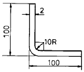
- 193.27
- 180.25
- 200
- 198
(정답률: 70%)
10. 강철 단조작업에서 단조온도의 색깔에 대한 다음 설명 중 옳은 것은?
- 어두운 색깔이면 단조가공을 시작할 수 있다.
- 빨강색이면 단조가공을 시작할 수 있다.
- 노랑.빨강색이면 단조가공을 시작할 수 있다.
- 담황색이면 단조가공을 시작할 수 있다.
(정답률: 알수없음)
11. 이음의 루트로부터 필릿 용접의 직각변 끝까지의 거리를 무엇이라 하는가 ?
- 각장(leg length)
- 노치(notch)
- 목의 이론두께(theoretical throat)
- 용접선(weld line)
(정답률: 알수없음)
12. 아세틸렌 가스의 자연발화 온도는 ?
- 406 - 408℃
- 5⑤ - 515℃
- 780℃
- 150 - 200℃
(정답률: 알수없음)
13. 이산화탄소 아크용접의 특징으로 틀린 것은 ?
- 용착금속의 기계적 성질이 우수하다.
- 자동 또는 반자동의 고속 용접을 할 수 있다.
- 용입이 얇다.
- 전자세 용접이 가능하다.
(정답률: 알수없음)
14. 전기저항 용접법 중에서 전극소모가 작으며 신뢰도가 높고,작업속도가 빠르며 소재에 돌기를 만들어 용접하는 용접법은 ?
- 프로젝션(projection)용접법
- 스폿(spot)용접법
- 시임(seam)용접법
- 플래시(flash)용접법
(정답률: 알수없음)
15. 특수 용접에서 심선과 용융 슬래그속을 흐르는 전류의 저항발열(joule열)을 이용한 것은 ?
- 테르밋 용접
- 일렉트로 슬래그 용접
- 일렉트로 빔 용접
- 플라스마 용접
(정답률: 알수없음)
16. 점용접의 결과에 영향을 미치는 중요한 요소가 아닌것은?
- 통전시간
- 도전율
- 용접전류
- 가압력
(정답률: 알수없음)
17. 다음 투영법 중 제 3각법의 설명으로 틀린 것은 ?
- 정면도의 윗쪽에 평면도를 그린다.
- 정면도의 오른쪽에 우측면도를 그린다.
- 정면도의 왼쪽에 좌측면도를 그린다.
- 정면도의 아래쪽에 배면도를 그린다.
(정답률: 85%)
18. 원형 블랭크 지름을 D라 하고 드로잉 제품의 지름을 d 라하면 드로잉률 m은?
- m= d/D
- m= D/d
- m= (D-d)/d
- m= (D-d)/D
(정답률: 알수없음)
19. 45° 로 자른 원뿔의 전개도는 어떤 방법을 이용하여 그리는 것이 편리한가 ?
- 평행선법
- 삼각형법
- 방사선법
- 혼합법
(정답률: 알수없음)
20. 용도에 따른 선의 종류 중 가는1점쇄선으로 나타내는 선은 ?
- 되풀이하는 것을 나타내는 선
- 단면의 무게중심을 연결한 선을 표시하는 선
- 중심이 이동한 중심궤적을 표시하는 선
- 공구,지그 등의 위치를 참고로 나타내는 선
(정답률: 알수없음)
2과목: 임의 구분
21. 다음 회주철을 표시하는 것은 ?
- SS
- SC
- SF
- GC
(정답률: 82%)
22. 알루미늄에 약 10% 까지의 마그네슘을 첨가한 합금으로 다른 주물용 알루미늄 합금에 비하여 내식성,강도, 연신율이 우수하고 절삭성이 매우 좋은 것은 ?
- 실루민
- 히드로날륨
- 라우탈
- Y 합금
(정답률: 알수없음)
23. 열처리 조직의 강도와 경도가 큰 순위가 바르게 된 것은?
- 마텐자이트>트루스타이트>소르바이트>펄라이트
- 트루스타이트>마텐자이트>소르바이트>펄라이트
- 소르바이트>펄라이트>트루스타이트>마텐자이트
- 펄라이트>트루스타이트>마텐자이트>소르바이트
(정답률: 알수없음)
24. 냉간가공과 열간가공을 비교 설명한 것 중 열간가공에 속하는 것은 ?
- 연신율 및 충격력의 감소한다.
- 도전율이 증가된다.
- 가공방향으로 섬유조직이 생기고 판재등은 방향성이 생긴다.
- 표면이 산화되기 쉬우며 정밀가공은 곤란하다.
(정답률: 40%)
25. 조립된 구조물이 비틀렸거나 넓어진 것을 조정하는데 사용되는 수공구는 ?
- 탄젠트 벤더
- 엔빌
- 가감나사
- 짐 크로(jim crow)
(정답률: 60%)
26. 다음 재료의 변형 수정에 대하여 쓴 것 중 틀린 것은 ?
- 조정나사는 조립한 구조물이 비틀리거나 벌어지거나 하였을 때에 조정하기 위하여 사용한다.
- 강판의 변형을 수정하려면 변형 수정 롤을 사용하면 좋다.
- 후판용 변형 교정롤에는 작업롤의 지름을 작게하고 강성을 주기 위하여 짐크로를 설치한 것이 많다.
- 변형 교정 프레스는 수직형과 수평형이 있다.
(정답률: 73%)
27. 다음에서 초음파 검사 방식이 아닌 것은 ?
- 펄스 반사식
- 투과식
- 여과식
- 공진식
(정답률: 80%)
28. 항온 열처리의 요소에 해당되지 않는 것은 ?
- 온도
- 시료
- 시간
- 변태
(정답률: 알수없음)
29. 금속 재료의 결정입자를 미세화하고 조직을 표준화할 목적으로 하는 열처리는 ?
- 불림(normalizing)
- 담금질(quenching)
- 풀림(annealing)
- 뜨임(tempering)
(정답률: 알수없음)
30. 배력 장치를 이용한 프레스(press)는 어느 것인가 ?
- 토글 프레스(toggle press)
- 익센트릭 프레스(eccentric press)
- 마찰 프레스(friction press)
- 나사 프레스(screw press)
(정답률: 알수없음)
31. 추력이 한 방향으로만 작용하는 바이스와 같은 기구에 사용하는 나사는 ?
- 사각 나사(square thread)
- 사다리꼴 나사(trapezoidal thread)
- 톱니 나사(buttress thread)
- 둥근 나사(round thread)
(정답률: 알수없음)
32. 다음은 전단가공하였을 경우, 절단면에 이루어지는 형상 중 넓을수록, 클수록 좋은 형상은 ?
- 처짐면
- 전단면
- 파단면
- 버어(burr)면
(정답률: 67%)
33. 다음중 전단가공이 아닌 것은 ?
- 업세팅(upsetting)
- 트리밍(trimming)
- 펀칭(punching)
- 블랭킹(blanking)
(정답률: 알수없음)
34. 직경 20mm의 반구형을 드로잉 가공할 때 블랭크의 직경은 몇 mm 인가 ?
- 27.28
- 28.28
- 29.28
- 30.28
(정답률: 90%)
35. 지름 100mm의 소재를 드로잉하여 지름 60mm의 원통용기를 만들었다. 이 때 드로잉률은 얼마인가 ? 또 이 60mm지름의 용기를 재드로잉률 0.8을 써서 재드로잉하면 재드로잉 후의 용기의 지름은 얼마인가 ?
- 드로잉률 0.3, 용기의 지름 56mm
- 드로잉률 0.6, 용기의 지름 48mm
- 드로잉률 1.2, 용기의 지름 60mm
- 드로잉률 0.3, 용기의 지름 100mm
(정답률: 알수없음)
36. 기름,물,고무,모래등을 이용하여 원통형 재료를 팽창시켜 플라스크형 금속용기를 만드는 것을 무엇이라 하는가 ?
- 벌징
- 마르폼
- 스피닝
- 커핑
(정답률: 알수없음)
37. 국부가열에 의한 변형교정 작업으로 잘못 설명한 것은?
- 경강은 열 영향이 커서 효과가 없다.
- 가열온도가 너무 높으면 금속 조직이 거칠어진다.
- 가열은 작은 불꽃으로 장시간 가열한다.
- 두께가 0.8mm인 연강판의 가열범위는 10 - 15mm가 적당하다.
(정답률: 알수없음)
38. 다음 중 전기저항열을 이용하는 용접이 아닌 것은 ?
- 점 용접(spot welding)
- 일렉트로 슬래그 용접(electro slag welding)
- 프로젝션 용접(projection welding)
- 심 용접(seam welding)
(정답률: 62%)
39. 리벳이음 작업시 작업순서를 나열한 것중 옳은 것은 ?
- 드릴링, 리밍, 리베팅, 코킹
- 리밍, 드릴링, 리베팅, 코킹
- 드릴링, 리밍, 코킹, 리베팅
- 리밍, 드릴링, 코킹, 리베팅
(정답률: 알수없음)
40. 모재를 맞대고 이음부에 같은 종류의 얇은 판을 대고 가압하는 방식의 심 용접법은 ?
- 메시 심 용접(mesh seam welding)
- 포일 심 용접(foil seam welding)
- 맞대기 심 용접(butt seam welding)
- 인터액트 심 용접(interact seam welding)
(정답률: 64%)
3과목: 임의 구분
41. 경합금을 심 용접할 때 통전시간과 단전시간(휴식시간)의 비를 몇 대 몇으로 하는가?
- 1 : 1
- 1 : 2
- 1 : 3
- 1 : 4
(정답률: 알수없음)
42. 판뜨기 전개에서 판두께를 고려하여 전개도를 그리는 가장 큰 이유는 ?
- 정확한 판뜨기를 위하여
- 접속부에 마찰열이 생기므로
- 절단 부위의 요철을 막기 위하여
- 전개시간을 절약하기 위하여
(정답률: 알수없음)
43. 그림과 같이 바로 선 사각통에 원통이 비스듬이 만나는 상관체의 전개도를 그렸다. 사각주의 상관부분 전개도로서 알맞는 것은 ?
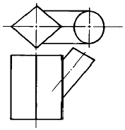
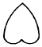
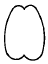
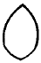
(정답률: 알수없음)
44. 다음 그림과 같이 구부리려면 철판 길이는 바깥치수 가산법으로 계산하면 몇 mm로 절단하여야 하는가 ? (단, 늘음 보정값은 3.5이다.)
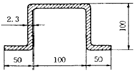
- 386
- 390.6
- 395.5
- 400
(정답률: 알수없음)
45. 다음 그림과 같이 반원형으로 전개된 판금을 직원뿔형으로 제작하려면 L과 d의 비를 얼마로 하면 되는가 ?
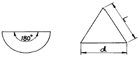
- 2 : 3
- 1 : 1
- 1 : 2
- 2 : 1
(정답률: 60%)
46. 판재에 대한 다음 설명 중 잘못된 것은 ?
- 아연 도금 강판에서 열연원판의 두께는 보통 1.6 ~ 6.0 mm 이다.
- 딥드로잉용 냉간 압연 강판의 기호는 SHP3이다.
- STS316L은 오스테나이트계 스테인리스강을 의미한다
- 황동판은 아연 함유량 30%에서 연신율이 최대값을 나타낸다.
(정답률: 알수없음)
47. 일반구조용 압연 강재로서 인장강도 400MPa의 강판의 표기 중 옳은 것은 ?
- SS400-A
- SS400-P
- SS400-B
- SS400-F
(정답률: 알수없음)
48. 재료의 전성(展性)이 큰 순서대로 된 것은 ?
- 금 > 은 > 백금 > 알루미늄 > 철 > 니켈
- 금 > 백금 > 은 > 구리 > 철 > 아연
- 금 > 은 > 알루미늄 > 구리 > 백금 > 납
- 금 > 은 > 구리 > 알루미늄 > 납 > 니켈
(정답률: 알수없음)
49. 냉간가공과 열간가공을 비교했을 때 열간가공의 특징을 설명한 것이다. 옳은 것은?
- 제품의 치수가 정확하다.
- 기계적 성질이 좋아진다.
- 가공하기가 쉽다.
- 제품의 표면이 깨끗하다.
(정답률: 알수없음)
50. 금속재료가 소성변형에 의하여 갖게 되는 이방성(異方性 : anisotropy)이란 ?
- 결정립의 결정학적 방향이 일정하지 않고 무질서한 방위를 갖는것.
- 결정립이 선택방위를 갖게되어 기계적 성질이 측정하는 방향에 따라 달라지는 것.
- 재료의 섬유조직이 파괴되어 결정립의 방향이 무질서한 집합조직으로 되는 것.
- 열간가공하면 질서정연하던 결정조직이 파괴되어 무질서하게 되는 것.
(정답률: 알수없음)
51. 금속의 슬립(slip)에 대한 설명이다. 틀린 것은 ?
- 슬립선은 변형이 진행됨에 따라 그 수가 적어진다.
- 슬립이 일어나기 쉬운 면은 원자 밀도가 제일 큰 격자면이다.
- 슬립에 대한 저항이 차차 증가하면 가공경화가 생긴다.
- 슬립의 방향은 원자 밀도가 제일 큰 방향이다.
(정답률: 알수없음)
52. 풀림(Annealing)의 목적과 관계가 없는 것은 ?
- 잔류 응력 제거
- 인성의 향상
- 조직을 균질화하고 조대화
- 절삭성 향상
(정답률: 70%)
53. 앵글(30x30x4)을 굽힘각 30° 로 굽히려고 할 때 앵글의 절단 여유길이(a)는 약 몇 mm 인가?
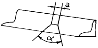
- 3.7
- 4.2
- 4.7
- 5.2
(정답률: 알수없음)
54. 프레스가공에서 전단가공의 틈새(C)를 구하는 공식은? (단, A:다이 구멍 지름, B:펀치 지름, t:판두께)
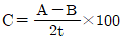
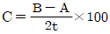
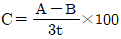
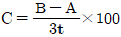
(정답률: 77%)
55. 그림의 OC곡선을 보고 가장 올바른 내용을 나타낸 것은?
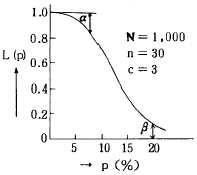
- α : 소비자 위험
- L(p) : 로트의 합격확률
- β : 생산자 위험
- 불량율 : 0.03
(정답률: 알수없음)
56. 품질관리 활동의 초기단계에서 가장 큰 비율로 들어가는 코스트는?
- 평가코스트
- 실패코스트
- 예방코스트
- 검사코스트
(정답률: 70%)
57. PERT/CPM에서 Network 작도시 碇은 무엇을 나타내는가?
- 단계(event)
- 명목상의 활동(dummy activity)
- 병행활동(paralleled activity)
- 최초단계(initial event)
(정답률: 알수없음)
58. 신제품에 가장 적합한 수요예측 방법은?
- 시계열분석
- 의견분석
- 최소자승법
- 지수평활법
(정답률: 50%)
59. 관리도에 대한 설명 내용으로 가장 관계가 먼 것은?
- 관리도는 공정의 관리만이 아니라 공정의 해석에도 이용된다.
- 관리도는 과거의 데이터의 해석에도 이용된다.
- 관리도는 표준화가 불가능한 공정에는 사용할 수 없다.
- 계량치인 경우에는
 관리도가 일반적으로 이용된다.
관리도가 일반적으로 이용된다.
(정답률: 75%)
60. 다음은 워크 샘플링에 대한 설명이다. 틀린 것은?
- 관측대상의 작업을 모집단으로 하고 임의의 시점에서 작업내용을 샘플로 한다.
- 업무나 활동의 비율을 알 수 있다.
- 기초이론은 확률이다.
- 한 사람의 관측자가 1인 또는 1대의 기계만을 측정한다.
(정답률: 82%)